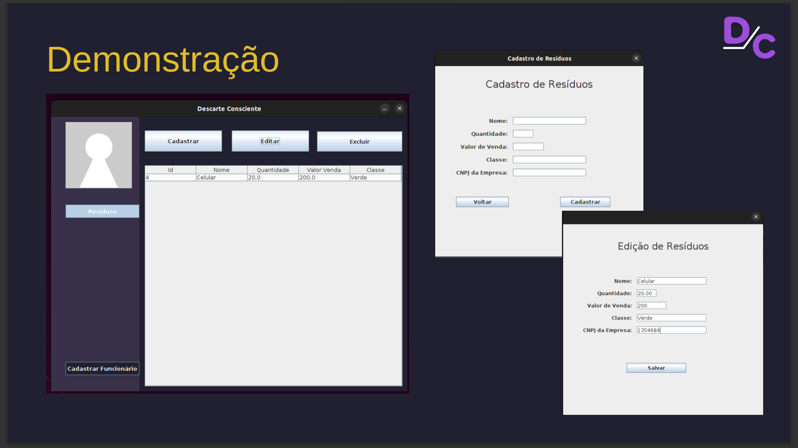

Consiste em um sistema que visa auxiliar empresas de descarte de lixo eletrônico com o monitoramento e gerenciamento de estoque.
Linguagens, dependencias e libs utilizadas: Java MySQL WorkBench MySQL Server MySQL Connector Java

A versão para teste pode ser encontrada disponível no github: https://github.com/KawanWan/FrontCode

Desenvolvedores e Contribuintes
Equipe - FrontCode
Cicero Augusto Oliveira do Nascimento, Gerente de Projeto
Kawan Wan Der Maas do Nascimento, Programador Java
Gustavo Silva Santos, Design
Augusto Melo Vernek, Programador Java
Pedro Henrique Duarte, Programador Banco de Dados